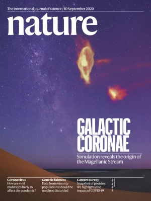
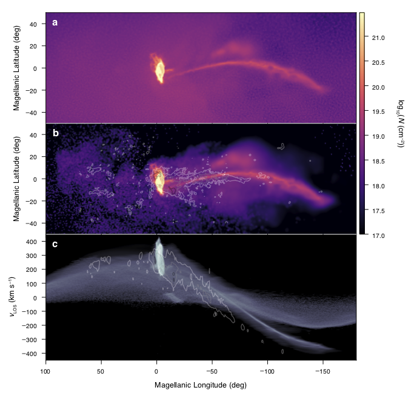
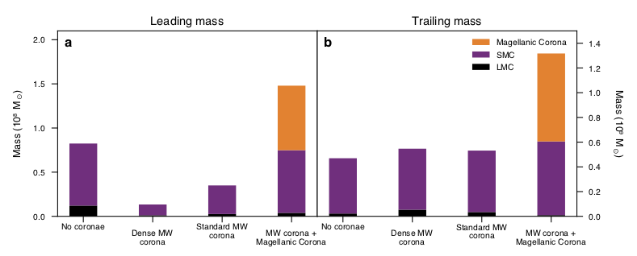
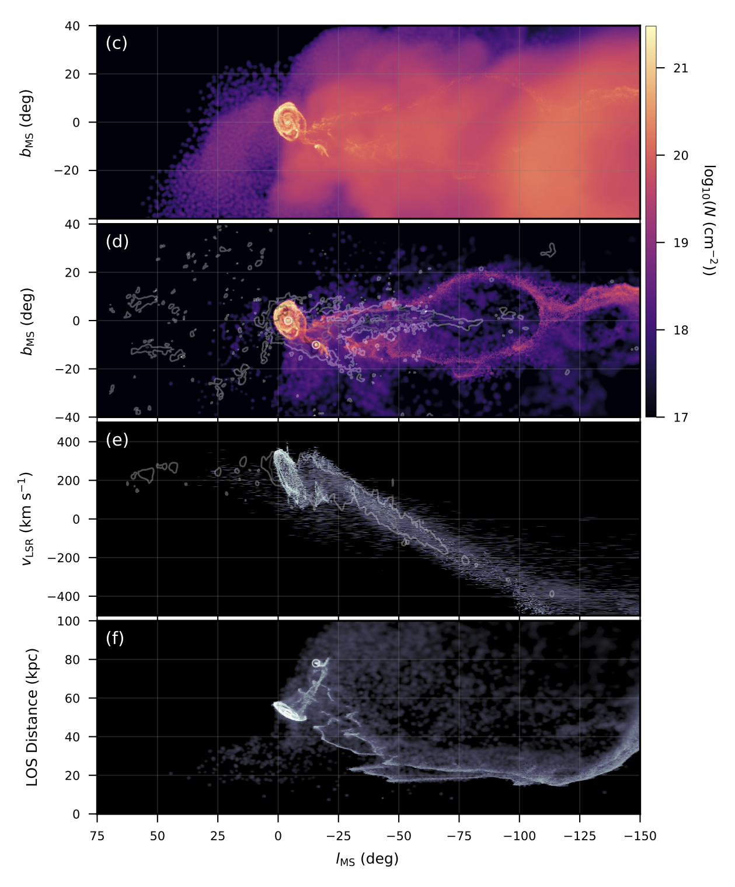
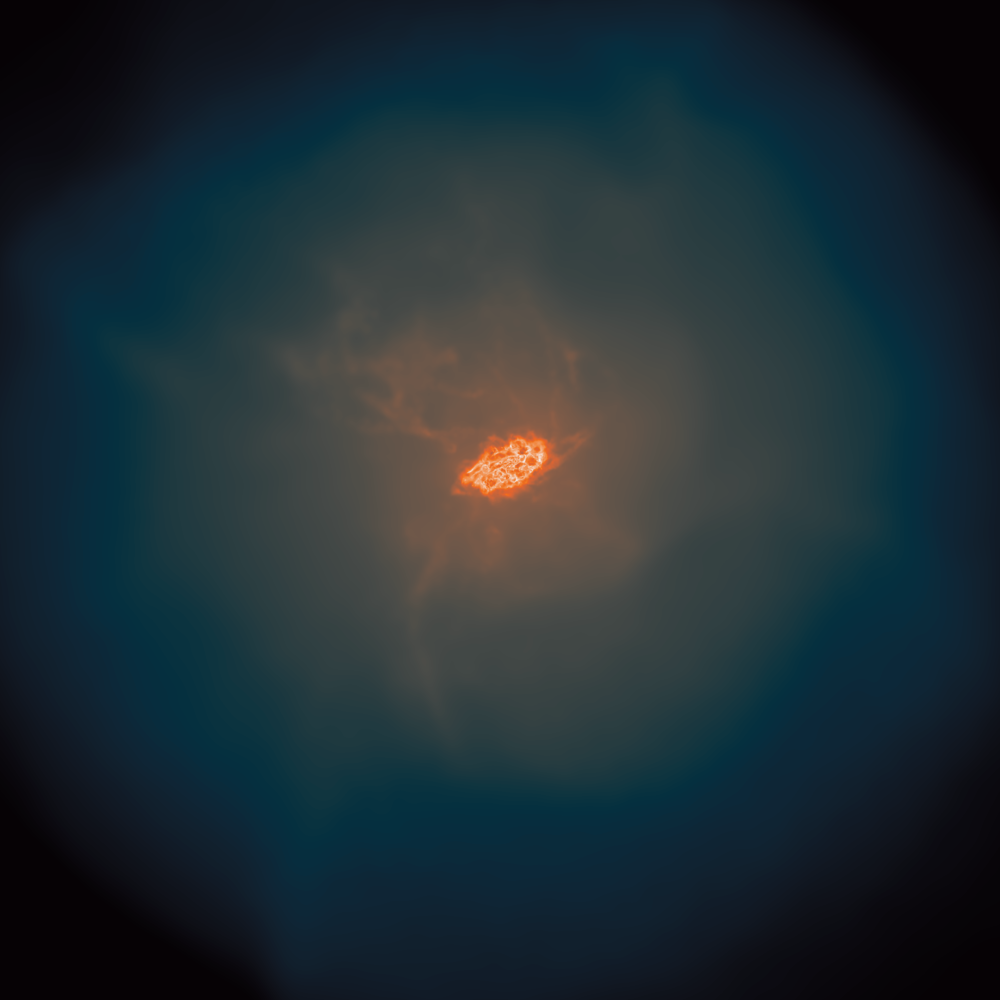
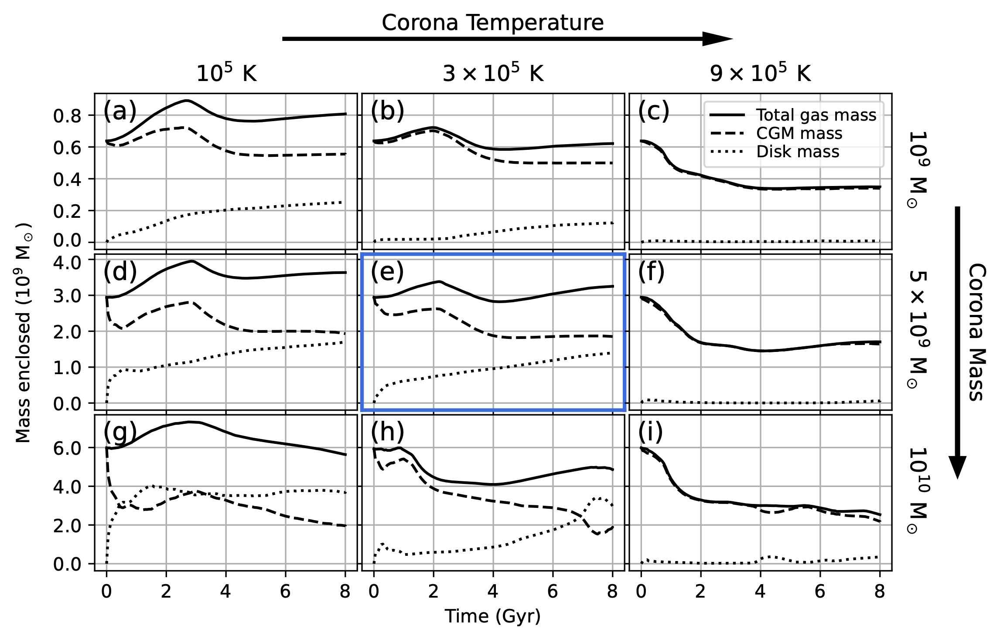
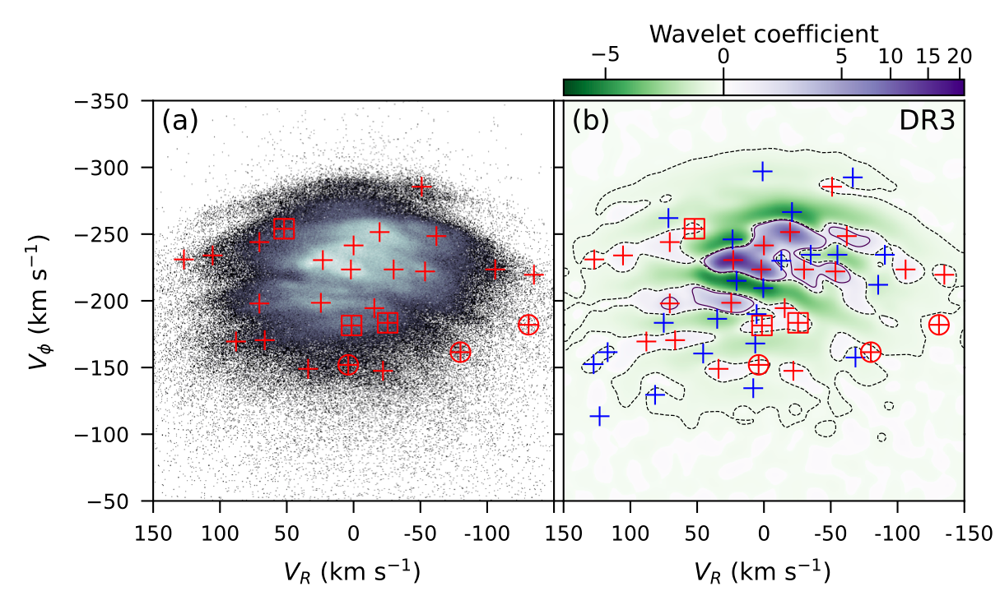
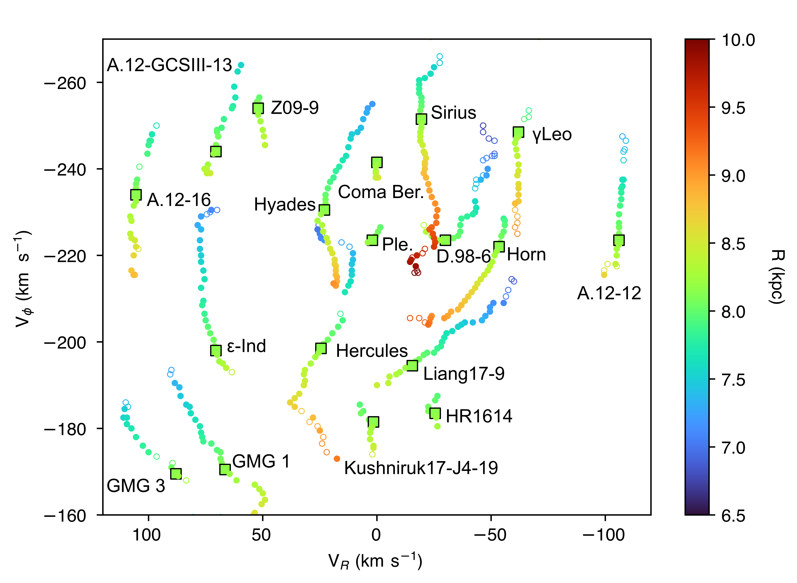
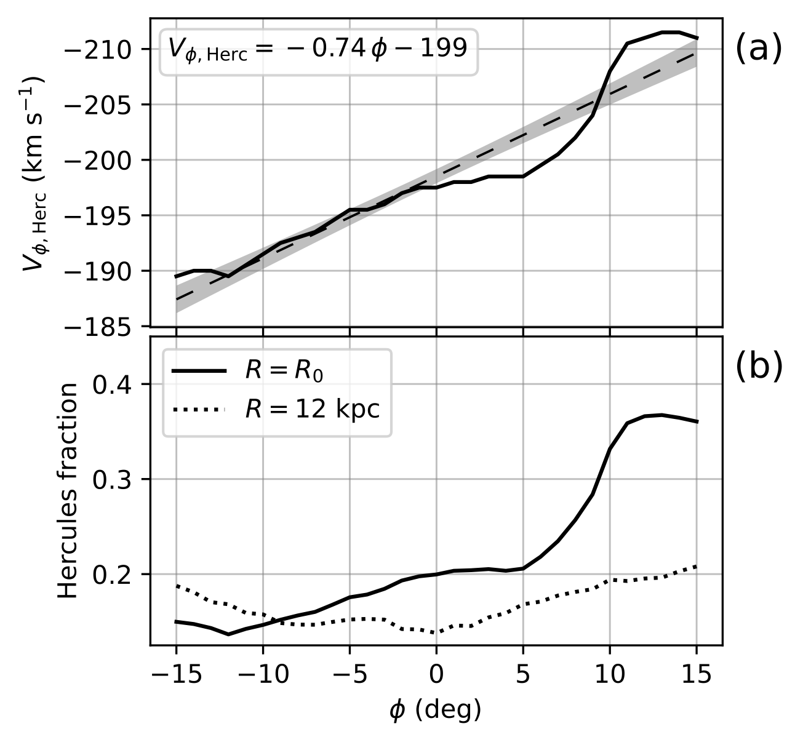

I love running and exploring simulations of galaxies and gas evolution in the universe. This has led me to many interesting science questions throughout my career. I have explored the dynamics of the Magellanic Clouds and the formation of the gaseous Magellanic Stream. This led to the prediction that the Large Magellanic Cloud must have been embedded within a warm, ionized circumgalactic medium (CGM) before it approached the Milky Way. This additional component is able to explain the very high ionization fractions observed all throughout the Magellanic Stream.
I am also interested in the composition of galaxies' circumgalactic medium more generally. Do satellite galaxies provide the cold gas we see in the CGM? Or is its multiphase nature naturally produced through local instabilities or galactic outflows? I have been exploring the origin and fate of cold clouds in the CGM that are analogus to the observed "high-velocity" clouds (HVCs) around the Milky Way. In the Illustris TNG simulations, it seems that most of the HVC analogs are formed through thermal instability.
These topics also mesh very well with galactic dynamics. I have explored the impact of the Galactic bar on the motions of stars in the solar neighborhood. As well as the impact of various simulation techniques on the orbital motions of satellite galaxies.
In the past, I have completed projects on characterizing light curves of "ultra-long period" Cepheid variable stars, detecting and analyzing the evolution of canopy regions on the Sun using AIA images from the Solar Dynamics Observatory, and constraining theoretical mechanisms of jet formation in proto-planetary nebulae. I also received a Master's degree in Theoretical Physics from the University of Edinburgh in 2017 where I performed calculations in self-dual Yang-Mills theory to learn more about the connection between quantum field theory and quantum gravity using the double copy.
ASTROPHYSICISTPHOTOGRAPHERDANCER
The bulk of my work over the past few years has been in running N-body hydrodynamical simulations of the formation of the Magellanic Stream. These simulations have shown that a warm circumgalactic medium around the Large and Small Magellanic Clouds (LMC/SMC), the Magellanic Corona, is a key ingredient in being able to account for the high ionization fraction and total mass of the Stream. Previous works had not been able to explain the massive amount of ionized gas (~2 billion solar masses) which makes up the majority of the Stream's mass budget. Since the Magellanic Corona is expected to be around the virial temperature of the LMC (3×105 K for an LMC halo of 2×1011 solar masses), this gas should be ionized. Therefore, as the Magellanic Clouds fall in towards the Milky Way, the Magellanic Corona is warped and stretched by the Milky Way's gravitational potential and its own hot circumgalactic gas. This work was published in September 2020 in Nature:
Lucchini, S., D'Onghia, E., Fox, A. J., et al. Nature, 585, 203. (2020) 10.1038/s41586-020-2663-4, arXiv:2009.04368
Lucchini, S., D'Onghia, E., Fox, A. J., et al. Nature, 585, 203. (2020) 10.1038/s41586-020-2663-4, arXiv:2009.04368

The Magellanic Stream in zenithal equal-area coordinates. a, Observed HI data for the Magellanic Stream (McClure-Griffiths et al. 2009), with the line-of-sight velocity indicated by the colour scale (from -350 km s-1 to 400 km s-1) and the relative gas column density indicated by the brightness. The points represent the sightlines with ultraviolet-absorption-line observations from the Hubble Space Telescope (Fox et al. 2014), coloured by their line-of-sight velocity. These points show the extent of the ionized gas associated with the stream. b, The results of the model including the Magellanic Corona and the Milky Way's hot corona. Gas originating in both the LMC and the SMC disks is shown in the model, without separating neutral gas from ionized gas. This affects the morphology of the stream, causing the model to appear smoother and less fragmented than the data. However, the model reproduces the current spatial location and velocity of both clouds, and the velocity gradient of the gas along the stream. The Milky Way disk and background are extracted from real HI images. Image in Panel a adapted with permission from McClure-Griffiths et al. (2009).

Gas column density and velocity in Magellanic coordinates. a, The gas column density N of the simulated stream, which is composed of the Magellanic Corona gas and cold disk gas stripped from the clouds, displayed in Magellanic coordinates. b, Column density of only the simulated cold gas stream, compared to HI data from Nidever et al. (2010). Black, grey and white contours corresponding to observed column densities of 1019 cm-2, 1020 cm-2 and 1021 cm-2, respectively. c, The line-of-sight velocity of the total stream gas as a function of Magellanic longitude, with contours as in b and brightness showing the relative density.

Mass budget for the Magellanic Stream. a, b, Origin of the mass in the leading arm (a) and the stream (b) at the present day. Each column represents a model of the formation of the stream: the fiducial dwarf-dwarf galaxy interaction model (first on the left); a dwarf-dwarf galaxy interaction model that includes a high-density Milky Way gas halo with total mass 5×109 solar masses, which shows that the leading arm does not survive (second left column); a dwarf-dwarf galaxy interaction model that includes a lower-density Milky Way gas halo (total mass of around 2×109 solar masses), still consistent with current estimates (second from the right); and the model reported here of a dwarf-dwarf galaxy interaction that includes the lower-density Milky Way gas halo and the Magellanic Corona (right-most column). The inclusion of the Magellanic Corona shows that this gas contributes greatly to the total mass of the stream, increasing it to values consistent with observations (about 1.3×109 solar masses).
Upon the inclusion of the Magellanic Corona, the interaction history of the Magellanic Clouds will be changed. The Magellanic Corona not only provides additional gravitational potential, but the hydrodynamical friction and ram-pressure forces also cause the SMC's orbit around the LMC to decay more quickly. My second paper presented improved models in which the present-day positions and velocities of the Magellanic Clouds match their observed values within 3 sigma. Exploring the parameter space of possible orbits through analytical integration, we selected 10 and ran them in full hydrodynamical simulations using GIZMO. 7 out of the 10 formed Streams all with similar properties. The interaction history that best matched the present-day velocities of the Clouds includes two interactions over 3.4 billion years tidally producing a Trailing Stream and gaseous Bridge. The most interesting result is that in all 7 simulated Streams, the stripped gas ends up very close to the Sun, as close as 20 kiloparsecs away, which is a significant paradigm shift from previous models which predicted distances out to 100-200 kiloparsecs away. This work was published in November 2021 as a Letter in the Astrophysical Journal:
Lucchini, S., D'Onghia, E., & Fox, A. J. ApJL, 921, L36. (2021) 10.3847/2041-8213/ac3338, arXiv:2110.11355
Lucchini, S., D'Onghia, E., & Fox, A. J. ApJL, 921, L36. (2021) 10.3847/2041-8213/ac3338, arXiv:2110.11355

The orbital history of the Magellanic Clouds. The left panel shows the evolution of the Magellanic Stream in cartesian coordinates with the MW disk centered at the origin and denoted by the gray shaded oval (the sun is located at (x,y,z) = (-8.3,0,0.027) kpc). The solid and dashed lines represent the past orbital trajectories of the LMC and SMC respectively. The color of the gas represents plane-projected density on an arbitrary scale with higher densities represented as lighter colors. The top right panel shows the distance between the center of masses of the LMC and SMC in kpc as they orbit around each other and fall in towards the MW. Their initial state is on the left side of the plot at t = -3.4 Gyrs and it progresses towards present day on the right (t = 0). The bottom right panel shows the Galactocentric distance of the Magellanic Clouds in kpc where the solid and dashed lines represent the LMC and SMC respectively.
In the third paper in this series, we explored the parameter space of properties for the Magellanic Corona. By running a suite of simulations varying the Corona's initial mass and temperature, we determined that the LMC can host a stable CGM for >4 Gyr with masses >2×109 M⊙. Through tidal interactions between the Magellanic Clouds (while embedded within the Corona), the Magellanic Stream is formed and our simulations of the full three-body interactions (including the Milky Way) can reproduce the observed total mass of the neutral and ionized components of the Trailing Stream, size of the LMC disk, ionization fractions along the Stream, morphology of the neutral gas, and on-sky extent of the ionized gas. This work was published in May 2024 in the Astrophysical Journal:
Lucchini, S., D'Onghia, E., Fox, A. J. ApJ, 967, 16. (2024) 10.3847/1538-4357/ad3c3b, arXiv:2311.16221
Lucchini, S., D'Onghia, E., Fox, A. J. ApJ, 967, 16. (2024) 10.3847/1538-4357/ad3c3b, arXiv:2311.16221


Magellanic Corona stability. Study of the stability of the Magellanic Corona for varying initial masses and temperatures. Each panel shows the total, CGM, and disk masses within 120 kpc as a function of time (solid, dashed, and dotted lines, respectively). The initial temperatures increase from left to right with values of 1, 3, and 9×105 K. The initial masses increase from top to bottom with values of 1, 5, and 10×109 M⊙ (within 200 kpc). Our fiducial model (outlined in blue) is the center frame (Panel e) corresponding to an initial mass of 3×109 M⊙ and a temperature of 3×105 K.

The mass of the Trailing Stream. Each bar shows the results for a different model compared against the observed mass in neutral and ionized gas shown in the left-most column (2.7×108 M⊙ in neutral gas; 1.0×109 M⊙ in ionized gas, though this may be an underestimate). Each value is computed by integrating the column densities for all gas behind the SMC assuming a distance to the gas of 55 kpc (as done in observational works).
I have also been working with two undergraduates at UW - Madison on the detection and characterization of stellar moving groups in the Milky Way. We have developed a new, open-source Wavelet Transformtion code, MGwave (soon to be available on GitHub) to analyze Gaia data. Selecting stars near the Sun, we use MWwave to identify substructures in velocity space. The figure shows the histogram of stars in azimuthal velocity vs radial velocity space (in Galactocentric coordinates), and its corresponding wavelet transformed image in which purple (green) regions denote over (under) densities and the red (blue) crosses show the locations of the maxima (minima). Using the third data release from Gaia, we detected three new moving groups (circled) and three additional groups previously not seen in Gaia data (squares). This work has been published in MNRAS:
Lucchini, S., Pellett, E., D'Onghia, E., & Aguerri, J. A. L. MNRAS, 519, 1, 432. (2023) 10.1093/mnras/stac3519, arXiv:2206.10633
Lucchini, S., Pellett, E., D'Onghia, E., & Aguerri, J. A. L. MNRAS, 519, 1, 432. (2023) 10.1093/mnras/stac3519, arXiv:2206.10633

With the third data release from Gaia, we now have over 30 million stars with full 3D position and 3D velocity data. This allows us to explore the kinematic structure of the Milky Way throughout the disk. In the image, we're showing the locations of the maxima in the wavelet image as we progress through Galactocentric radius. The points are colored by their radius value and you can see that many of the structures that we see in the solar neighborhood (shown as squares) are connected throughout the rest of the disk. This indicates that these moving groups are large-scale structures likely formed through gravitational effects instead of local, transient features. The properties of these extended moving groups can then tell us about the gravitational potential and non-axisymmetric features of the Milky Way.

Moving groups through Galactocentric radius. The left panel shows the histogram of stars in velocity space (azimuthal velocity vs radial velocity), and the right panel shows the wavelet transformed image in which purple (green) regions denote over (under) densities and the red (blue) crosses show the locations of the maxima (minima). The radial value is shown in the top of the left panel. You can see many of the groups continuously move from one frame to the next indicating that they are coherent structures across the Milky Way disk.
We have used this technique to specifically track the Hercules moving group in azimuth around the Galactic disk. the Gaia DR3 data allowed us to extend this search to ±15° from the solar position. Simulations have previously shown that if Hercules is formed through trapping of stars due to the Galactic bar's corotation resonance, we would expect the azimuthal velocity and strength of the moving group to increase as we approach the minor axis of the bar (+φ). This is because the Hercules stars are trapped orbiting around the L4/L5 Lagrange points of the Milky Way's bar. We would not see this behavior in the velocity and strength of Hercules if it were formed through the outer Lindblad resonance of the bar. These two theories of the formation of Hercules are tied to different regimes of pattern speed for the bar. For a slowly rotating bar (pattern speed ∼40 km/s/kpc), the corotation radius falls near the solar position and thus could be the mechanism for Hercules formation. While for a high pattern speed bar (∼55 km/s/kpc), the radius of the outer Lindblad resonance falls near Hercules. We find the velocity and strength of Hercules change exactly as expected for a low pattern speed bar, thus independently confirming other measurements of the Milky Way's bar. This work has been published as a letter in MNRAS:
Lucchini, S., D'Onghia, E., & Aguerri, J. A. L. MNRAS, 531, 1, L14. (2024) 10.1093/mnrasl/slae024, arXiv:2305.04981
Lucchini, S., D'Onghia, E., & Aguerri, J. A. L. MNRAS, 531, 1, L14. (2024) 10.1093/mnrasl/slae024, arXiv:2305.04981
